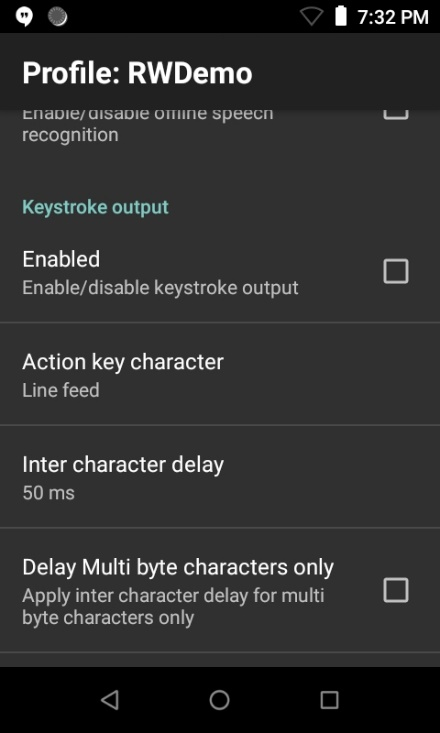

概要
無線自動識別 (RFID) 入力では、内蔵 RFID Zebra モバイル コンピュータまたは Zebra RFID sled を使用して RFID タグからデータを取得します。現在、この機能は MC3300R および RFD40 でのみサポートされています。RFID は、DataWedge へのもう 1 つの入力ソースです。データ配信は、バーコードや MSR (磁気ストライプ リーダー) などの他の入力ソースと同様です。取得したデータは、プロファイルの [キーストローク出力] セクションの [基本データ形式 (BDF)] オプションおよび [高度なデータ形式 (ADF)] オプションに従って処理および形式化されます。
重要: 初期セットアップの手順については、次の資料を参照してください。
- 『MC3300R Integrator Guide』の「Setting Up the MC3300R」セクション。
- 『RFD40 Product Reference Guide』の「Setting up the RFD40 RFID Standard Sled」セクション。
RFID 入力
DataWedge プロファイルの [RFID 入力] には、RFID 入力の切り替え、トリガ モードの指定、RFID リーダー設定の構成のオプションが用意されています。

有効 - RFID タグ読み取りを有効/無効にします
リーダーの選択 - 内蔵 RFID リーダーの名前を表示します
ハードウェア トリガ - RFID 読み取りを有効にするハードウェア トリガを有効/ 無効にします。有効にした場合は、[トリガ モード] を設定します。
リーダー設定の構成:
- 重複フィルタ タグ – 複数の読み取り値からの同じデータを重複して表示するのではなく、読み取ったデータを 1 回だけ表示する機能を有効/無効にします。
- タグ読み取り時間 - イベントがアプリケーションに通知される時間 (ミリ秒)。タイムアウトになる前にトリガをリリースする場合は、トリガのリリース時にデータがアプリケーションに返されます。アプリケーションに返されるデータは、Android バンドル ペイロードの容量に制限されます。その容量を超えて読み取られたデータはすべて破棄されます。
- アンテナ送信出力 - RFID リーダーによって送信される信号出力の大きさ。値が大きいほど、RFID タグを読み取りやすくなります。範囲は 5 ～ 30dBm です。
- セッション - 読み取りセッションを構成します。詳細については、『EPC UHF Gen2 Air Interface Protocol Standard』を参照してください。サポートされている値:
- セッション 0 - EPC UHF Gen2 Air Interface Protocol 標準仕様に基づく
- セッション 1 (デフォルト) - EPC UHF Gen2 Air Interface Protocol 標準仕様に基づく
- セッション 2 - EPC UHF Gen2 Air Interface Protocol 標準仕様に基づく
- セッション 3 - EPC UHF Gen2 Air Interface Protocol 標準仕様に基づく
- インベントリ状態 - タグが RFID リーダーに応答できるかどうかを示す、タグのインベントリ状態/フラグを設定します。タグは、4 つのセッションごとに個別のインベントリ フラグを維持します。各フラグには、対称的な A 値と B 値があります。特定のセッション内で、リーダーは、通常、A から B にタグをインベントリし、続いて B から A にタグを再インベントリします (またはその逆を行います)。オプション:
- 状態 A
- 状態 B
- AB フリップ
- ハードウェア キー – RFID 読み取りを実行するように RFID トリガを設定します。オプション:
- デフォルト – キー プログラマ アプリで RFID キー イベントがマッピングされているキーを RFID トリガとして使用します。RFID キー イベント名は、BSP (OS プラットフォーム) によって異なります (例: SYMBOL_RFID)。
- ガン トリガ – ガン トリガを RFID トリガとして使用します。
- スキャン – スキャン ボタンを RFID トリガとして使用します。
- メモリ バンク – 読み取るメモリ バンクを構成します。一部のタグの集積回路 (IC) では、より多くのユーザー メモリまたはより長い EPC (電子製品コード) 番号を使用できるように、メモリ バンク間でのビット割り当てが異なっています。必要なメモリ バンクのタイプを判断するには、タグの仕様を参照してください。サポートされている値:
- なし (デフォルト) - 読み取るメモリ バンクがありません。
- 予約済み - タグのアクセス パスワードとキル パスワードをそれぞれ 32 ビットで保存します。キル パスワードは、タグを永続的に無効にします。アクセス パスワードは、タグの書き込み機能をロックおよびロック解除する場合に設定します。したがって、パスワードが指定されている場合は、タグが書き込み可能です。通常、アプリケーションに機密データが含まれている場合に使用します。
- EPC - EPC コードを 96 ビット以上のメモリで保存します。
- ユーザー - (オプション) 詳細情報を保存する拡張メモリ。このメモリは、さまざまなサイズ (通常は 512 ビット、最大 8K) にすることができます。温度や有効期限など、EPC メモリに適さない、または収まらない追加データに使用できます。
- TID (タグ識別) - メーカーからの一意のタグ ID を格納します。これは通常、変更できません。
- トリガ モード – RFID リーダーをアクティブにするモードを選択します。サポートされている値:
- 即時 (デフォルト) - トリガを押したときにタグを読み取ります。
- 連続 - トリガを 1 回押した後、タグを継続的に読み取ります。もう一度トリガを押すと、タグの読み取りが終了します。
- フィードバック – RFID タグの読み取りの音声または視覚的フィードバックを構成します。オプション:
- ビープ音 - 音声フィードバック
- LED - 視覚的フィードバック
- リンク プロファイル – 接続されているリーダーに基づいて自動的に表示されるオプションから、リーダーで使用されるプロファイルを選択します。表示される値の範囲は、リーダー モデルに応じて変わることがあります。
- ダイナミック出力 – RFID リーダーの消費電力の最適化を有効/無効にします。
- SL フラグ – タグの選択済みフラグを選択します。タグは、選択済みフラグ SL を実装します。これは、RFID リーダーが [選択] コマンドを使用してアサートまたはデアサートすることができます。オプション:
- アサート
- デアサート
- すべて
- プリフィルタ:
- プリフィルタ有効化 - 標準 RFID プロトコルに基づいて、タグ パターンのプリフィルタ オプションを有効/無効にします。
- タグ パターン - タグ フィルタリングで比較する 16 進文字パターンを指定します。パターン マッチングは、[オフセット] の値に基づいて行われます。最大文字数: 64 バイトの 16 進数。
- メモリ バンク - フィルタを適用するメモリ バンクを指定します。サポートされている値: ユーザー、TID、EPC。
- オフセット - [タグ パターン] の基準を適用するメモリ バンクの先頭からのオフセットをバイト単位で指定します。
- アクション - 一致するタグで SL (選択済みフラグ) をアサートまたはデアサートするか、インベントリ済みフラグを A または B に設定するかを指定します。オプション:
• INV A NOT INV B または ASRT_SL_NOT_DSRT_SL
• INV A または ASRT SL
• NOT INV B または NOT DSRT SL
• INV A2BB2A NOT INV A または NEG SL NOT ASRT SL
• INV B NOT INV A または DSRT SL NOT ASRT SL
• INV B または DSRT SL
• NOT INV A または NOT ASRT SL
• NOT INV A2BB2A または NOT NEG SL - ターゲット - プリフィルタが適用されたときに影響を受けるフラグを指定します。オプション:
• SESSION S0
• SESSION S1
• SESSION S2
• SESSION S3
• SL FLAG
- ポスト フィルタ:
- ポスト フィルタの有効化 - DataWedge サービスによって実行されるポスト フィルタを有効/無効にします。
- タグ読み取り数 - 1 回のインベントリ アクションで表示するタグの最大数を指定します。整数範囲: 0 ～ 1000。
- RSSI 値 - 近接度に基づいて RFID 信号の全体的な傾向を表示します。値が 0 に近いほど、タグが近接していることを示します。値の範囲: -100 ～ 0。
キー マッピング
MC3300R は複数のトリガで構成されており、すべてがバーコード機能と SimulScan 機能でデフォルトで使用されます。RFID アクションにハードウェア トリガを使用するには、それを RFID にマッピングする必要があります。手順は、以下のとおりです。
手動での手順:
- Android の [設定] を開きます。
- [キー プログラマ] をタップします。
- [SYMBOL_RFID] をタップします。
CSP (構成サービス プロバイダ) での手順: CSP では、StageNow を使用して、デバイスのステージング中にキーマッピングを更新します。詳細については、「KeyMapping Manager」を参照してください。
データ
RFID データの読み取りに関する重要な注意事項:
- デフォルトでは、各タグの読み取り後に改行文字が追加されます。
- 1 回の読み取りサイクルで返されるデータセットには、1 つ以上のタグが含まれる場合があります。
- これに該当し、複数のタグが同時に読み取られた場合は、複数のデータ読み取りからのデータセットを返すことができます。
- [キーストローク出力] を介してデータを受信する場合は、[文字間の遅れ] を 50ms に設定する必要があります。

RWDemo
RWDemo では、DataWedge の RFID 機能を示します。このアプリケーションは、MC33R などのサポートされている Zebra RFID デバイスにプリインストールされており、起動時に RWDemo に関連付けられた DataWedge プロファイルを作成します。
関連ガイド: